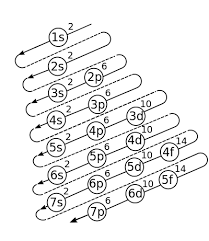

EL SPIN ATOMICO
El espín (del inglés spin 'giro, girar') es una propiedad física de las partículas elementales por la cual tienen un momento angular intrínseco de valor fijo. El espín fue introducido en 1925 por Ralph Kronig e, independientemente, por George Uhlenbeck y Samuel Goudsmit. La otra propiedad intrínseca de las partículas elementales es la carga eléctrica.

La configuración electrónica es el modo en que los electrones de un átomo de un elemento se distribuyen alrededor del núcleo. De acuerdo con el modelo mecánico cuántico del átomo, la configuración electrónica indica en qué niveles y subniveles de energía se encuentran los electrones de un elemento.
